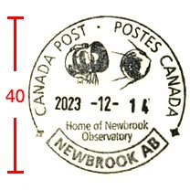

Newbrook PO pictorial cancel
Home of Newbrook Observatory · 2nd version
- Status
- Active
- Run dates
- 2020-01-01 to present
- Design
- "Home of Newbrook Observatory"; space observatory, meteor
- Ink colour
- Black
- Designer
- Unknown
- Post office
- Newbrook PO
5041 - 50 St
Newbrook, AB
T0A 2P0 - Subjects
- astronomy, science, technology, meteor, space, observatory
Collect it by mail. Send your stamped covers, with a stamped return envelope, to the post office address above. How to collect pictorial cancels by mail · en français
 Newbrook PO1st version
Newbrook PO1st version Abee POHome of Abee Meteorite
Abee POHome of Abee Meteorite Redwater POWheat, oil derrick
Redwater POWheat, oil derrick Chipman PO1st version
Chipman PO1st version Chipman PO2nd version
Chipman PO2nd version Vilna POWorld's largest mushrooms / Plus grands champignons au monde
Vilna POWorld's largest mushrooms / Plus grands champignons au monde